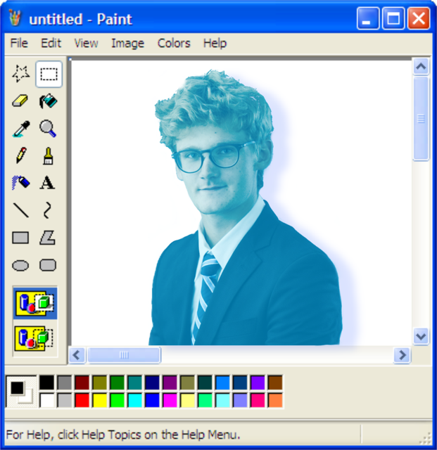

I am dedicated to advancing technological superiority through cybersecurity and computer science in order to better protect critical systems and strengthen national security. My goal is to serve others through technology and contribute to a safer, more resilient world.
Early Bird APC Loader - An AES-CBC encrypted Windows loader that creates a suspended process, queues an APC on the main thread, and navigates early process execution, CFG, and low-level Windows internals.
Web Staged AES Encrypted CBC-mode Loader - A staged Windows payload loader that downloads an AES-CBC encrypted payload, decrypts it with BCrypt, and explores process injection, CFG, and low-level Windows internals.
Build A Malware Workshop - Utilize MITRE ATT&CK components to model malware and read up on respective real-world tactics.
SystemFunction033 RC4 Encryption Calc "Malware" - Poppin' calc with the undocumented Windows API function SystemFunction033.
Grandma's Homelab - A Lenovo ThinkCentre housed inside a 50-year-old CRT television running Ubuntu Server, Docker, Tailscale, Cowrie honeypots, Wazuh SIEM, and other misc. services.
Corporal - a community-based iOS map app which connects those in need and those who want to serve to local clothing, food, and shelter aid locations.
CTFLFG - a Looking-for-Group (LFG) forum built specifically for CTF competitors of all skill levels.
View my CTF writeups / dev notes.
Reach out via LinkedIn or my email strnadbleu@gmail.com.
For additional projects, see my GitHub profile which contains repositories of my miscellaneous projects.